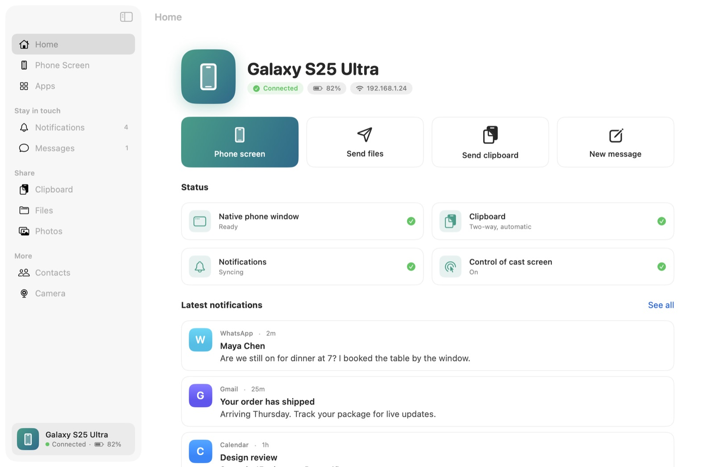
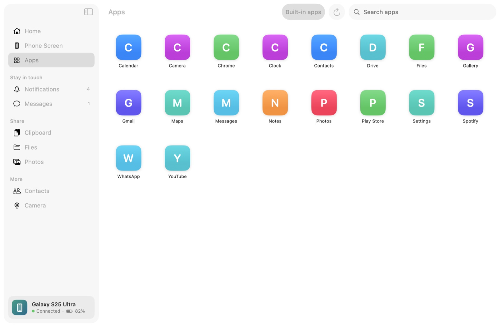
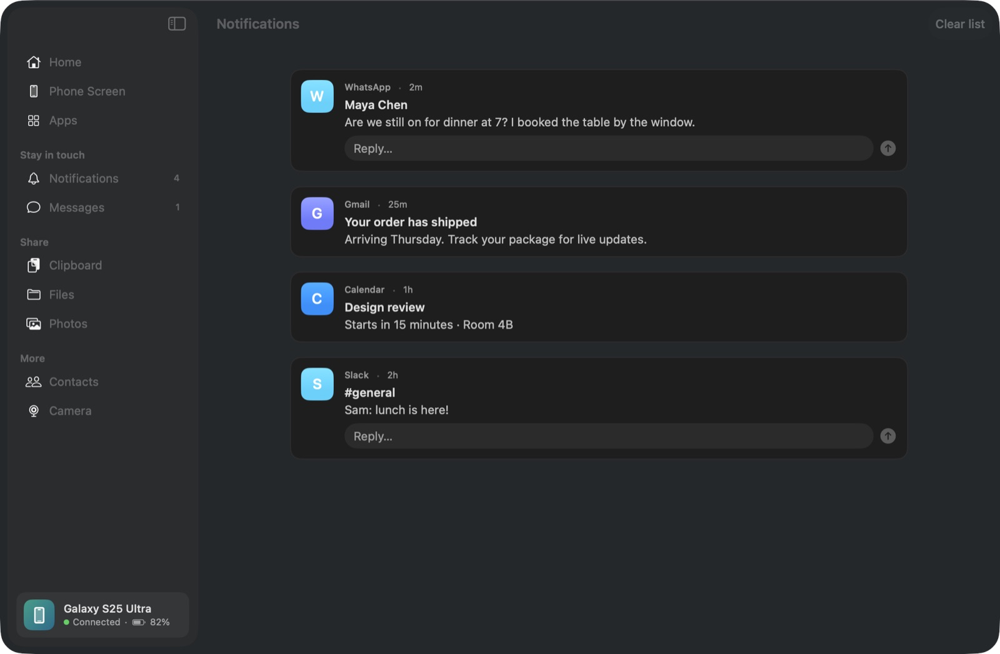
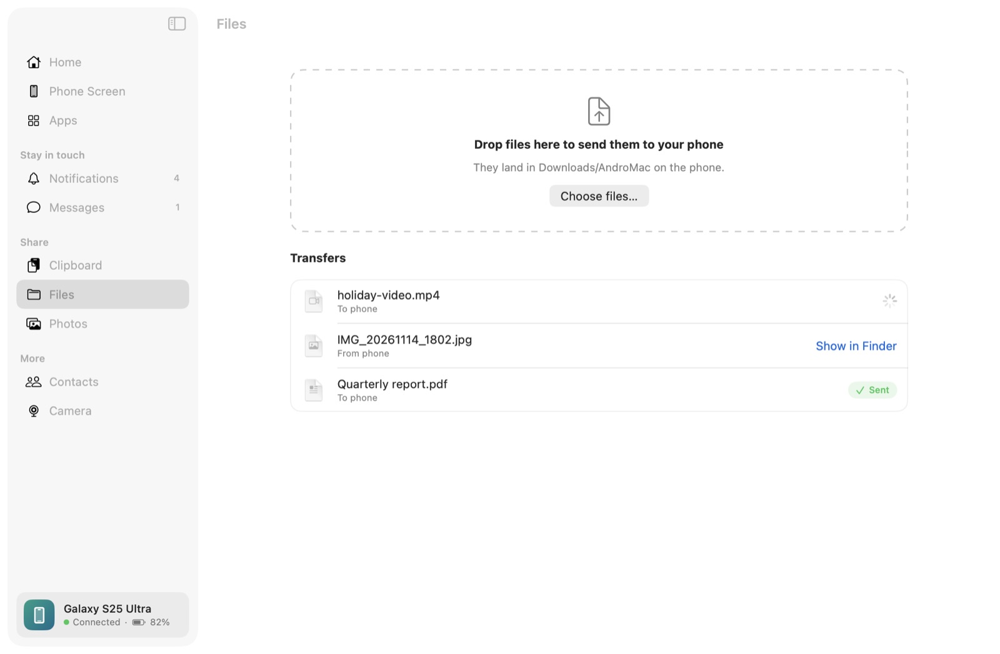

Your phone's screen, apps, notifications, messages, clipboard, files and photos, in one Mac app. It runs over your own Wi-Fi: no account, no cloud, nothing leaves your network. Free and open source.

The things a Windows PC can do with an Android phone, for people who use a Mac instead.
The whole phone in a Mac window with mouse, keyboard and sound. The phone's own display stays dark.
Open one phone app per Mac window and keep the phone free.
See them on the Mac as they arrive. Reply or dismiss without picking the phone up.
Read your SMS conversations, reply, and start new ones from a full keyboard.
Copy on one device, paste on the other. Works in both directions.
Drag files to the phone, send files to the Mac, and browse the phone's photos full size.
Screens shown with sample data.



About ten minutes the first time. Steps 1 to 4 cover notifications, messages, clipboard, files and photos. Step 5 adds the phone screen and app windows. The README has every detail and a troubleshooting table.
Download it, move it to Applications, and run this once in Terminal because the app is not notarized by Apple:
xattr -dr com.apple.quarantine /Applications/AndroMac.app
Download the APK on the phone, open it, and allow the install when Android asks.
With both on the same Wi-Fi, tap Scan the QR code on your Mac in the phone app and point it at the Mac's screen.
In the phone app, tap Permissions, Notification sync and Remote control until each shows a tick.
Install two free tools on the Mac, switch on USB debugging in the phone's Developer options, plug the phone in once and tap Allow. After that it works wirelessly.
brew install scrcpy brew install --cask android-platform-tools
Phone makers give screen and input access only to apps they build in, which is how Microsoft's Phone Link works on Samsung phones. For any other app, Android's USB debugging option is the supported way to let a computer you trust control the phone. You switch it on once.
The phone only accepts computers you approve on its "Allow USB debugging" prompt. Wireless debugging stays on while the phone is linked to your Mac. Switching off USB debugging in Developer options undoes all of it.
No. The two devices talk directly over your local network, encrypted with a key that only exists in the QR code you scan. There is no account and no cloud service.
Android 11 or later and macOS 14 or later. So far it has been used on one Samsung phone and tested on an Android 14 emulator, so other phones may have rough edges.
Phone calls from the Mac, and RCS, MMS or group chats in Messages. It is an early project; see the status section of the README for what has and has not been tested.